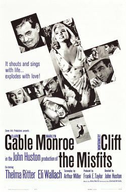

The Misfits
Starring: Clark Gable, Marilyn Monroe, Montgomery Clift
Director: John Huston
Writer: Arthur Miller
Producer: David O. Selznick
Studio: Seven Arts Productions
The Misfits is a 1961 American romantic drama film directed by John Huston and written by Arthur Miller, who adapted his own 1957 short story. It stars Clark Gable, Marilyn Monroe, and Montgomery Clift, alongside Thelma Ritter and Eli Wallach.
Trivia
- Won the Genesis Award.
- The making of The Misfits was troublesome on several accounts, not the least of which was the sometimes 100 °F (38 °C) heat of the northern Nevada desert and the breakdown of Monroe's marriage to writer Arthur Miller.
- Miller revised the script throughout the shoot as the concepts of the film developed.
- According to Huston in a 1981 retrospective interview, he felt "absolutely certain that she was doomed," a conclusion he reached while working on the film: "There was evidence right before me almost every day.
Filming Locations
- The bar scene wherein Monroe plays paddle ball and the rodeo scenes were filmed in Dayton, Nevada, east of Carson City.
Previous Showings
1 Run • 1 Festival
265 tickets sold
All runs on record (1):
- August 26 - 27, 2026 · 265 ticketsSummer 2026 including the Films of Marilyn Monroew/ Let's Make Love